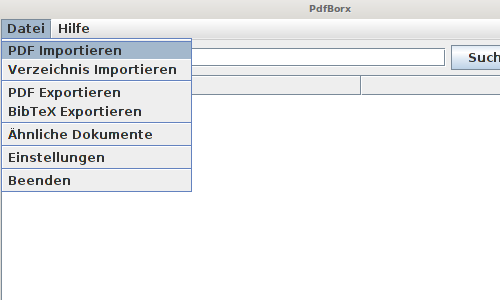
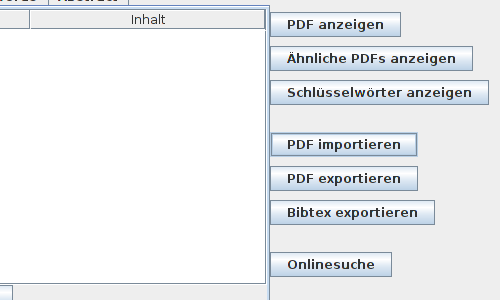
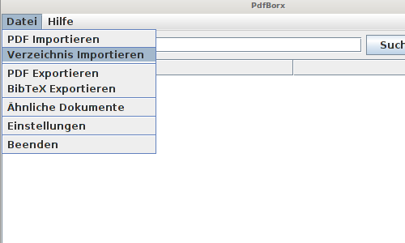

Um eine oder mehrere PDF-Dateien in "PDFBorx" zu importieren klicken sie entweder in der Menüleiste oben rechts auf "Datei" und anschließend auf "PDF importieren."

Alternativ können sie im unteren Bereich des Nutzer-Interfaces auf die Schaltfläche "PDF importieren" klicken

Sie können ganze Ordner samt Unterordner in ihre PDF-Liste hinzufügen indem sie unter "Datei" auf "Verzeichnis Importieren" klicken

[zurück]